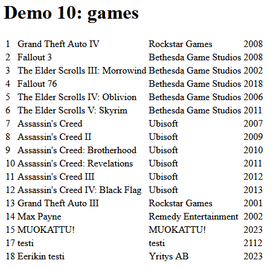

Demo 10
PDO: tietokantayhteys
Tietokanta
Lisää samariumille phpmyadminiin taulu ja tiedot lukemalla sql-tiedosto test_games.sql.
- Kirjaudu cPaneliin (https://cpanel.tunnus.treok.io/) ja avaa MySQL Databases
- Tee uusi tietokanta nimeltä tunnus_sasp
- Tämän jälkeen tee uusi käyttäjä, tunnus_sasp, luo salasana Password Generatorin avulla, kopioi salasana itsellesi talteen!
- Lisää vielä tekemäsi käyttäjä tietokannalle (Add User to Database), voit antaa kaikki oikeudet (ALL PRIVILEGES).
- Avaa seuraavaksi cPanelin työkaluista phpMyAdmin, tuo sql-tiedosto tietokantaasi.
dbfunctions.php
Tee aluksi itsellesi uusi tiedosto dbfunctions10.php demot-kansioosi . Tehdään aluksi funktio jonka avulla voidaan ottaa yhteys tietokantaan:
/**
* Ottaa yhteyden tietokantaan, palauttaa
* pdo-olion.
* 13.2.2023/EM
*/
function connect() {
$servername = "tunnus.treok.io";
$username = "tunnus_sasp";
$password = "salasana";
//$port = 3306;
$dbname = "tunnus_sasp";
try {
$conn = new PDO("mysql:host=$servername;dbname=$dbname", $username, $password);
// set the PDO error mode to exception
$conn-<setAttribute(PDO::ATTR_ERRMODE, PDO::ERRMODE_EXCEPTION);
echo "Connected successfully";
return $conn;
} catch(PDOException $e) {
echo "Connection failed: " . $e->getMessage();
die();
}
}
demo10.php
Kokeillaan tietokantayhteyttä
require "./dbfunctions10.php"; $pdo = connect();
dbfunctions10.php
Funktio joka hakee kaikki pelit
/**
* Hakee kaikki pelit taulusta test_games
*/
function getAllGames() {
$pdo = connect();
$sql = "SELECT * FROM test_games";
$stm = $pdo-<query($sql);
$games = $stm-<fetchAll(PDO::FETCH_ASSOC);
return $games;
}
Voit testata tätä taas demossasi:
//$pdo = connect(); $games = getAllGames(); var_dump($games);
Funktio joka poistaa pelin id:n perusteella
/**
* Poistaa pelin jonka gameid on $id
*/
function deleteGame($id) {
$pdo = connect();
$sql = "DELETE FROM test_games WHERE gameid=?";
$stm = $pdo-<prepare($sql);
$ok = $stm-<execute([$id]);
return $ok;
}
Funktio joka hakee pelin id:n perusteella
/**
* Palauttaa tietyn pelin
*/
function getGameById($id) {
$pdo = connect();
$sql = "SELECT * FROM test_games WHERE gameid=?";
$stm = $pdo-<prepare($sql);
$stm-<execute([$id]);
$game = $stm-<fetch(PDO::FETCH_ASSOC);
return $game;
}
Funktio joka lisää pelin
function insertNewGame($name, $company, $release) {
$pdo = connect();
$sql = "INSERT INTO test_games (`name`, company, `release`) VALUES (?, ?, ?)";
$stm = $pdo-<prepare($sql);
$ok = $stm-<execute([$name, $company, $release]);
return $ok;
}
Funktio joka muokkaa tietyn id:n peliä
function updateGame($name, $company, $release, $id) {
$pdo = connect();
$sql = "UPDATE test_games SET `name`=?, company=?, `release`=? WHERE gameid=?";
$stm = $pdo-<prepare($sql);
$ok = $stm-<execute([$name, $company, $release, $id]);
return $ok;
}
demo10.php
Hae funktion avulla pelit ja näytä ne taulukossa. Tulokset kannattaa käydä foreach-silmukassa läpi.

Poistaminen
Lisää linkki jolla kutsut samaa sivua ja lähetät parametrina deletedid:n.
echo "<td><a href='./demo10.php?deletedid=" . $game["gameid"] . "'>poista</a></td>";
Lisää sivun alkuun tarkistus:
if (isset($_GET["deletedid"])) {
$id = $_GET["deletedid"];
$ok = deleteGame($id);
}
Lisääminen
Lisää linkki sivulle joka johtaa toiselle sivulle, demo10form.php:lle.
Muokkaaminen
Lisää linkki taulukolle joka johtaa form-sivulle.
echo "<td><a href='./demo10form.php?editedid=" . $game["gameid"] . "'>muokkaa</a></td>";